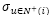

一、 简介
冷启动问题分类：
a. 用户冷启动
b. 物品冷启动
c. 系统冷启动
解决方案：
a. 先提供非个性化推荐
b. 利用用户注册时提供的信息
c. 利用用户的社交网络账号登陆（需要用户授权）
d. 要求用户在登陆时对一些物品进行反馈
e. 对于新加入的物品，可以利用内容信息
f. 在系统冷启动时，可以引入专家的知识
二、 利用用户注册信息
1. 用户注册信息分类
(1) 人口统计学信息
(2) 用户兴趣的描述
(3) 从其他网站导入的用户站外行为的数据
2. 注册信息使用流程
(1) 获取用户的注册信息
(2) 根据用户的注册信息对用户分类
(3) 给用户推荐他所属分类中用户喜欢的分类（可以考虑单特征分类页可以考虑组合分类）
由上图可知，基于用户注册信息的推荐算法的核心问题是计算每种特征f的用户喜欢的物品，也就是物品i在具有特征f的用户中的热门程度p(f,i)：
N(i)：喜欢物品i的用户集合。
U(f)：具有特征f的用户集合。
上述定义的改进：对于热门的物品，往往会有很多不同特征的用户都喜欢，即不同f的用户群都有一样高的p(f,i)值，这样就无法把它们区分开来了。
对此，我们可以换一种定义方式：喜欢物品i的用户中具有特征f的比例：
α：解决数据稀疏性问题。（比如一个物品只被一个用户喜欢过，这个用户刚好是特征f的，那这个p(f,i)=1就没有统计意义，这时加入一个比较大的a可以避免这样的物品产生比较大的权重）
实验与测评：实验测评是要注意算法的粒度，一般来说，利用的用户人口统计学特征越多，粒度越细，算法的精度和覆盖率越高，越能准确地预测用户兴趣。
三、 选择合适的物品启动用户的兴趣
1. 用来启动用户兴趣的物品的特点
(1) 比较热门
(2) 具有代表性和区分性
(3) 启动物品集合需要由多样性
2. 选择启动物品的系统——“决策树”（Nadav Golbandi提出）
Nadav Golbandi的基本思想是通过如下方式度量一个物品的区分度D(i)：
N+(i)：喜欢物品i的用户集合；
N-(i)：不喜欢物品i的用户集合；
：没有对物品i评分的用户的集合（不知道物品i）。
 ：喜欢物品i的用户对其他物品评分的方差。
：不喜欢物品i的用户对其他物品评分的方差。
：没有对物品i评分的用户对其他物品评分的方差。
如果这3类用户集合内的用户对其他物品的兴趣很不一致，说明物品i具有较高的区分度（可以用来作为启动物品）。
具体实验方法：Nadav Golbandi的算法首先会从所有用户中找到具有最高区分度的物品i，然后将用户分为3类，继续找其中具有最高区分度的物品，再将这3类中每一类分为3类（共9类），继续找下去，最终可以通过对一系列物品的看法将用户进行分类。
冷启动时，从根节点开始询问用户对该节点物品的看法，然后根据用户的选择将用户放到不同的分枝，直到进入最后的叶子节点，此时我们对用户的兴趣就有了比较情趣的了解，从而可以开始对用户进行比较准确度个性化推荐。
四、 利用物品的内容信息
1. UserCF和ItemCF的不同
(1) UserCF
使用用户关系来推荐，没有冷启动问题，但要解决“第一推动力”的问题，即新的物品要有人来发现，只要发现了，就能传播开来了，这个时候就要用到物品内容信息了。
(2) ItemCF
存在严重的物品冷启动问题，因为ItemCF就是根据用户之前喜欢的物品来推荐物品；并且，新加入的物品因为无法及时计算相似度（一般一天算一次，因为耗时），也造成了物品的冷启动。此时就要用到物品的内容信息了。
2. 向量空间模型
一般来说，物品的内容可以用向量空间模型来表示，该模型会将物品表示成一个关键词向量。对物品d，它的内容表示成一个关键词向量为：
其中，ei就是关键词，wi就是关键词对应的权重。
如果物品时文本，首先，要对文本进行分词，将字流变成词流，然后从词流中检测出命名实体（如人名、地名、组织名等），这些实体和一些其他的重要的词将组成关键词集合，最后对关键词集合排名，之后我们可以用信息检索领域著名的TF-IDF公式计算每个关键词的权重：
如果物品的电影，可以根据演员在剧中的重要程度赋予他们权重。向量空间模型的优点是简单，缺点是丢失一些信息，如关键字之间的关系。不过在绝大多数应用中，向量空间模型对于文本的分类、聚类、相似度计算已经可以给出令人满意的结果了。
在给定物品内容的关键词向量后，物品的内容相似度可以通过向量之间的余弦相似度来计算：
（这种算法施加复杂度很高，在计算可以先通过简历关键词-物品的倒排表加速这一计算过程）
3. LDA话题模型
向量空间模型在计算长文本的时候可以获得很高的精确度，但在计算短文本时就很难，这个时候话题模型就能起到作用。如何建立文章、话题、关键词的关系是话题模型研究的重点。
使用LDA计算物品的内容相似度时，我们可以先计算出物品在话题上的分布，然后利用两个物品的话题分布计算物品的相似度。比如，如果两个物品的话题分布相似，则认为两个物品具有较高的相似度，反之则认为两个物品的相似度较低。计算分布的相似度可以利用KL散度：
其中p和q是两个分布，KL散度越大说明分布的相似度越低。
五、 发挥专家的作用
雇佣专家对内容进行分类。
例子：Pandora个性化网络电台、Jinni电影推荐网站。
1. Pandora
使用了400多个特征（被称作“基因”），标注完所有的歌曲后，每首歌都可以表示为一个400维的向量，然后通过常见的向量相似度算法可以计算出歌曲的相似度。
特征比如：心情、剧情、类别、时间、地点、观众、获奖、风格、态度、画面、标记等。
2. Jinni
半自动、半人工的方式。让专家对电影惊喜给你标记，每部电影大约50个基因，这些基因来自大约1000个基因库。然后在专家标记一定的样本后，Jinni会使用自然语言理解和机器学习技术，通过分析用户对电影的评论和电影的一些内容属性对电影（特别是新电影）进行自己的标记。同时，Jinni也设计了让用户对基因进行反馈的界面，希望通过用户反馈不断改进电影基因系统。
总之， Jinni通过专家和机器学习相结合的方法解决了系统冷启动问题。